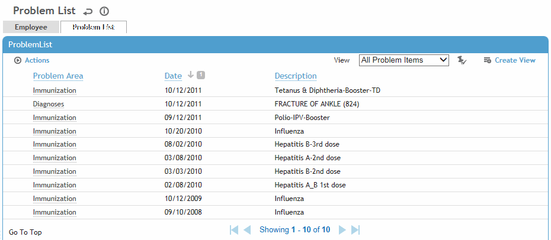
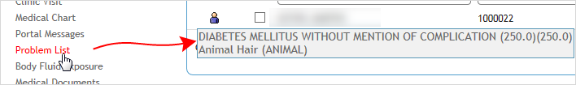

The Problem List is a report that includes all medical information that has been identified as a problem for the currently selected employee. The list also includes emergency contact information for the employee, which is transferred from the Employee Contacts section in the Employee Demographics module (for more information, see Recording Basic Employee Information).
Medical information including diagnoses, notes, restrictions, allergies and medications can be flagged as a problem at various points in Cority. Once the item is no longer a problem, you can remove it from the Problem List by removing the flag. The problem list flag remains editable even if a record is locked.
Procedures are given in each chapter that corresponds to a module in which information can be added to/removed from the list.
To view the Problem List:
Select an employee (for more information, see Selecting an Employee Record)
In the Occupational Health menu, click Problem List.

To print the Problem List, choose Actions»Print.
To view the record flagged as a problem, click the link in the Problem column.
If the "Highlight Problem List Module" system setting is enabled and the global employee has problem list records, the Problem List module will be displayed in red text in the menu. You can hover over this to view the problem(s) and access related records.
